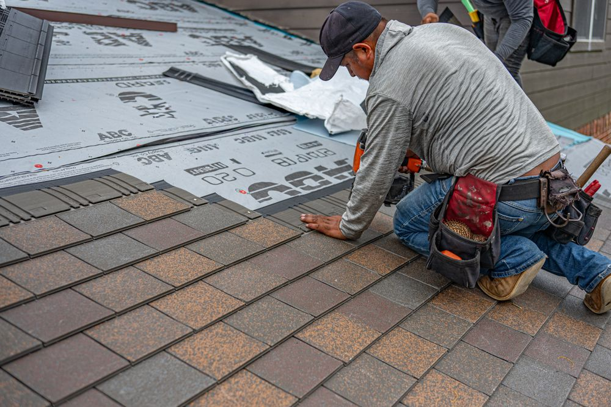

01 · Roofing
Re-roof, replacement, repair
Full tear-off and re-roof, replacement over a failing deck, and repairs where a repair is genuinely the right answer. Roof repair is one of the topics Google counts across our reviews.